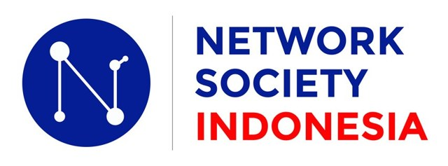

type = retweet (juga rt) masuk jaringan retweet; reply masuk jaringan reply. Baris tweet hanya dihitung di ringkasan.@ dibuang, huruf kecil. target_user berisi beberapa akun (dipisah koma/spasi) dibuat menjadi beberapa edge.target_user dilewati dan dilaporkan di status.text.